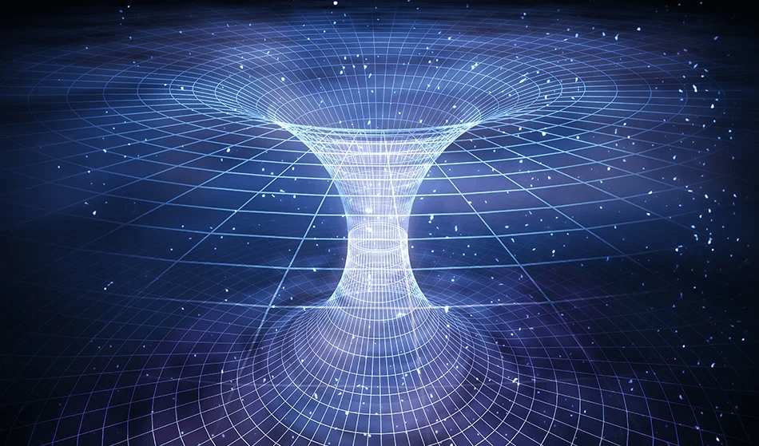
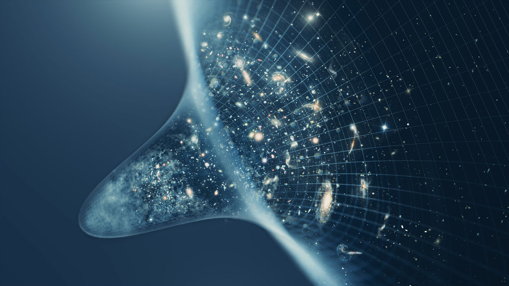

Gravité Quantique & Théorie Unifiée
La théorie des champs et le modèle standard, bien qu'ayant révolutionné notre compréhension du monde quantique, ne parviennent pas à expliquer un élément crucial : la gravité. Cette force fondamentale, à l'œuvre à l'échelle macroscopique et cosmologique, a longtemps échappé à une description unifiée avec les autres forces de la nature. La quête d'une théorie quantique de la gravité et d'une théorie unifiée est au cœur des recherches les plus ambitieuses de la physique moderne.
Gravité Quantique : Un pont entre la relativité générale et la mécanique quantique
La gravité quantique s'efforce de concilier deux piliers de la physique moderne : la théorie de la relativité générale d'Einstein, qui décrit la gravité à l'échelle macroscopique, et la mécanique quantique, qui régit le monde microscopique. Deux approches principales dominent ce domaine :
- Théorie des cordes : Cette théorie propose que les particules élémentaires ne soient pas des points sans dimension, mais plutôt des cordes vibrantes minuscules. La nature de la vibration détermine le type de particule.
- Boucles de spin : Cette approche cherche à quantifier la géométrie de l'espace-temps lui-même, à l'aide de structures mathématiques appelées "réseaux de spin".
Théorie Unifiée : Unifier toutes les forces de la nature
L'ambition ultime est de trouver une théorie unifiée capable de décrire non seulement la gravité quantique, mais aussi le modèle standard, réunissant ainsi toutes les forces de la nature au sein d'un cadre cohérent. Parmi les candidates prometteuses, on trouve :
- Théorie M : Une extension de la théorie des cordes qui propose l'existence de 11 dimensions d'espace-temps.
- Supergravité : Une théorie qui combine la relativité générale avec la supersymétrie, une symétrie postulant l'existence de particules supersymétriques pour chaque particule connue.
Défis et perspectives
La quête d'une théorie quantique de la gravité et d'une théorie unifiée se heurte à des défis de taille :
- Manque de preuves expérimentales : La plupart des théories candidates n'ont pas encore été confirmées par l'expérience, ce qui rend difficile la validation de leurs prédictions.
- Complexité mathématique : Les formulations mathématiques de ces théories sont extrêmement complexes, ce qui rend leur analyse et leur test expérimental particulièrement difficiles.
Malgré les obstacles considérables, la recherche d'une théorie unifiée et d'une théorie quantique de la gravité demeure un enjeu fondamental de la physique moderne. Sa réalisation permettrait non seulement de mieux comprendre l'univers à toutes les échelles, mais aussi d'ouvrir la voie à des découvertes potentiellement révolutionnaires, tant sur le plan physique que philosophique.
Ce voyage fascinant aux frontières de la connaissance nous invite à repousser les limites de notre compréhension de l'univers et à imaginer de nouvelles perspectives insoupçonnées. L'exploration de ces théories, bien que semée d'embûches, promet d'enrichir notre vision du monde et de nous rapprocher, un jour peut-être, d'une compréhension véritablement holistique de la nature et de ses mystères.